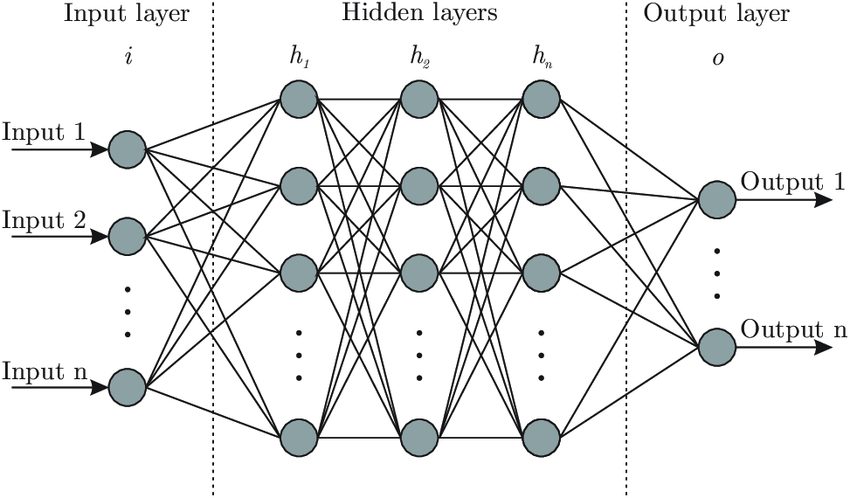
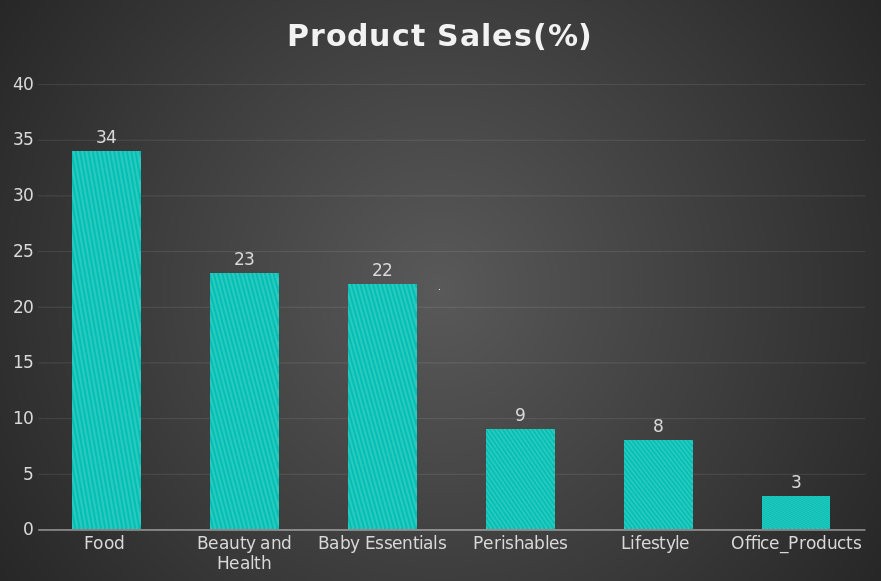
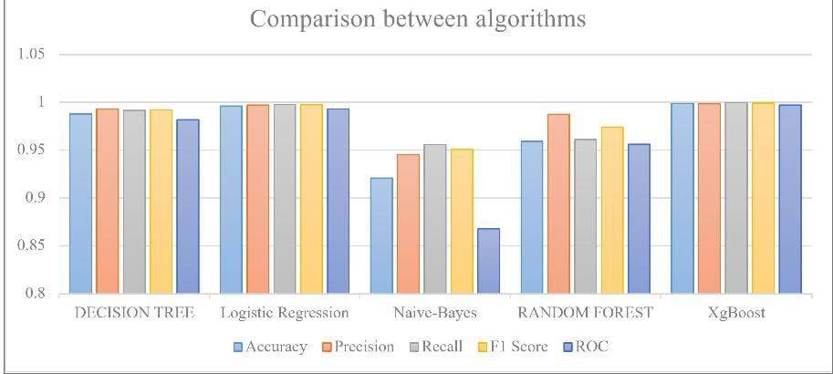
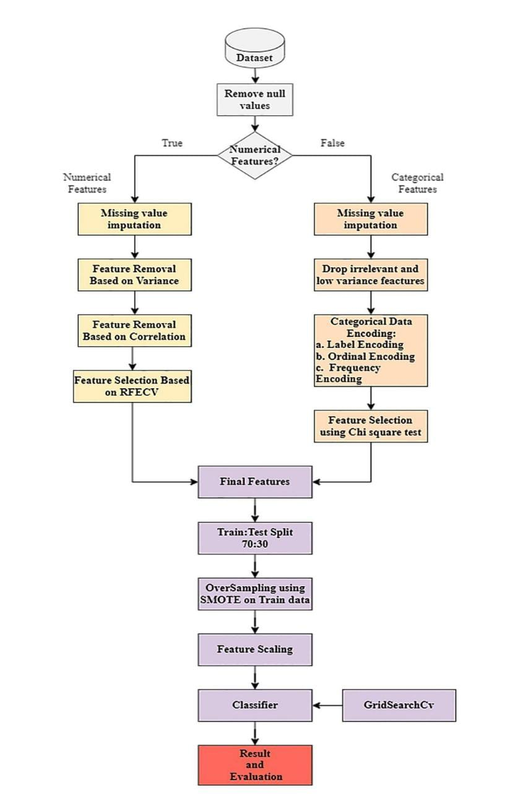
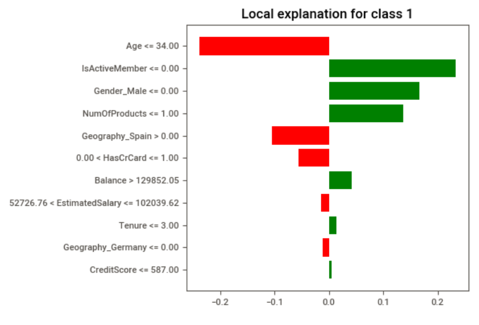
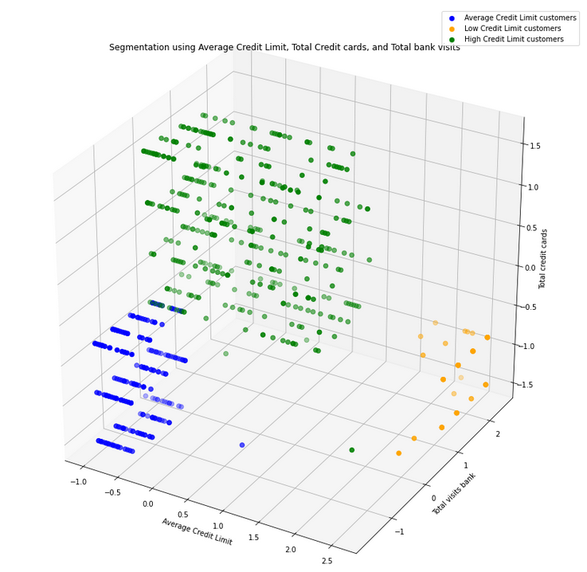
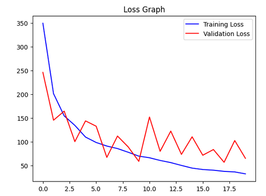
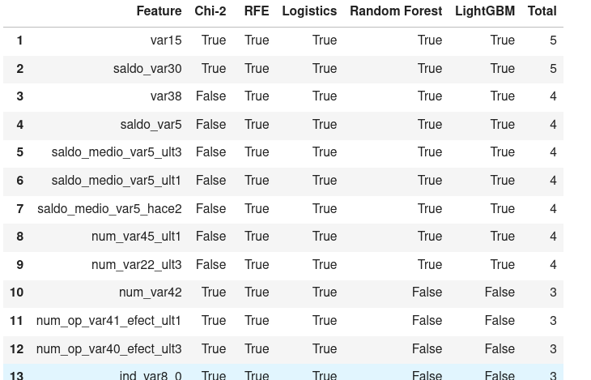
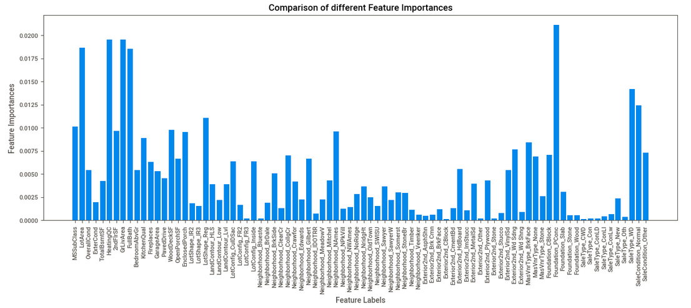
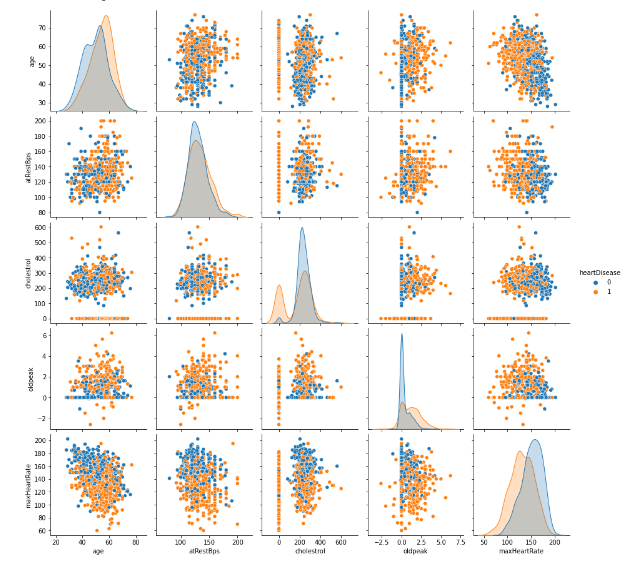

Research Experiences
I pursued one-year undergraduate thesis on feature selection engineering for the prediction of loan default in a high-dimensional peer-to-peer lending system. Furthermore, as a Junior Data Analyst at a start-up, I worked on analyzing sales data and developing efficient forecast pipelines. Apart from that, I worked on several course projects and independent projects to hone my data analytics and machine learning skills. Codes used in these works are publicly available on my GitHub GitHub.
1. Industry research @ Apon
Title : Understanding product analysis, customer purchasing behavior, and employing causal inference to forecast the effects of an offer
Description : I worked as a Junior Data Analyst at Apon-Wellbeing, a Fair trade chain retail shop for lower income families. My role involved collaborating with the operations and supply chain teams to analyze product data, customer purchasing behavior, and forecast the effects of promotional offers. One project involved preparing a dynamic report to identify angel customers for the upcoming month based on sales data and specific criteria set by the manager. I also created a slide presentation addressing various questions, such as customer demographics, familiarity with the credit system, feedback on Apon, and reasons for shopping preferences. The projects aimed to provide actionable insights for the business and improve decision-making processes.
Tools Used : scikit-learn, power-bi, excel
Github Repos : Survey-Data-Analysis and Sales-Data-Analysis-Report
2. Undergraduate Thesis Research @ RUET
Title : Dimensionality Reduction of a High-Dimensional Imbalanced Data for Credit Risk Assessment using Machine Learning
Description : The dataset from Lending Club, which has 151 total attributes, was used. The number of attributes was decreased to 21 using a mixture of four feature selection procedures (Variance Threshold, Correlation coefficient, RFECV, and chi-squared test). SMOTE was also utilized to address the imbalanced dataset problem. Additionally, according to the needs of the categorical characteristics, ordinal encoding, label encoding, and frequency encoding were implemented. Four classifiers (Logistic Regression, Decision Tree, Random Forest, and XGBoost) were used to predict loan default. Logistic Regression outperformed the other classification models with an F1 Score of 99.8%, the AUC of 99.3%, the accuracy, precision, and recall of 99.6%.
Tools Used : scikit-learn
Github Repos : XXXX
3. Independent Projects to learn Data Analytics & Machine Learning
These are the projects I have worked on independently, going beyond my regular curriculum, using Kaggle datasets to learn data analytics and machine learning techniques.
3a. Project on building a transformer from scratch to perform translation : A ground-breaking paper entitled "Attention Is All You Need" unveiled the Transformer architecture, a neural network model for NLP tasks that only uses attention processes to analyze input sequences. This project follows that paper to implement a transformer from scratch and then train it to translate texts from English to Italian. here .
3b. Project on Disease Prediction from Sentiment Analysis : This project's goal is to categorize patient conditions using drug reviews. The most frequent 10 diseases were considered from a total of 150 diseases. I applied TF-IDF to the cleaned review column to create a feature matrix. Multinomial Naive-Bayes was used to predict the disease from the review. Codes are available here .

3c. Project on Text Summarization using T5 : T5 is a brand-new transformer model from Google that uses text as input and changed text as output during end-to-end training. T5 is an algorithm for abstractive summarization. It implies that rather than simply picking up sentences from the source text, it will rewrite them as necessary. Codes are available here .
3d. Project on Predicting if two questions are similar or not : Classify whether question pairs are duplicates or not employing a combination of Count Vectorizer and feature engineering techniques. Codes are available here .
3b. Project on Recommendation System : A content-based and collaborative filtering recommendation system has been created in this notebook, followed by a combination of these models to create our ultimate recommendation system. The content based recommenders was based on Movie Overviews and Taglines and Cosine Similarity was used to calculate the similarity between two movies. Furthermore, the weighted rating for each film was then determined using the IMDB algorithm to pick the highest rated similar movies. In case of collaborative filering, excellent recommendations were provided by a surprise library that employed incredibly potent algorithms like Singular Value Decomposition (SVD). A hybrid filtering which combined both of the aforementioned techniques was implemented to get better performing recommendation system. Codes are available here .

3c. Project on Explainable AI : I employed Explainable AI using Random Forest and Lime to find out whether a customer will close a bank account. When customers or subscribers stop doing business with a company or service, it is known as customer churn. The goal of this project is to identify potential telecom business clients and analyze their reasons for leaving using LIME. Local Interpretable Model-agnostic Explanations is the acronym for LIME. LIME focuses on developing neighborhood surrogate models to justify specific forecasts. Codes are available here .
3d. Project on Clustering : Customer segmentation is the practice of separating customers into groups that reflect similarities among customers in each cluster. I have classified customers into segments to optimize the significance of each customer to the business. This is a Python implementation of K-means clustering and elbow approach for clustering customer types. Codes are available here .
3e. Project on Image Processing using Convolutional Neural Networks: In this project, I have learnt and implemented a Convolutional Neural Network to predict human age and gender from images using tensorflow. Codes are available here .
3f. Project on Feature Extraction and Data Mining: In this project, I have performed Feature extraction from a Kaggle dataset using multiple techniques including RFECV, Extra tree classifier and predicted customer satisfaction using Random Forest. Codes are available here .
3g. Project on Regression: In this project, I have performed Linear Regression and Feature Engineering to predict house prices using a Kaggle Dataset. Codes are available here .
3h. Project on Classifications: In this project, I have performed K-nearest neighbors, Decision Tree, and Random Forest classifiers to predict heart disease using scikit-learn. Three datasets gathered from the UCI repository were combined to produce a unique dataset. The data was cleaned using Pandas and Numpy, and the null values were filled using a KNN imputer. Using Seaborn, EDA was used to choose the best features. Finally, four classifiers (KNN, DT, and RF) were fitted with hyperparameter tuning using GridSearchCV. Codes are available here .
4. Course Projects @ RUET
- 360 Degree Firefighting Robot
- IOT based student attendance system